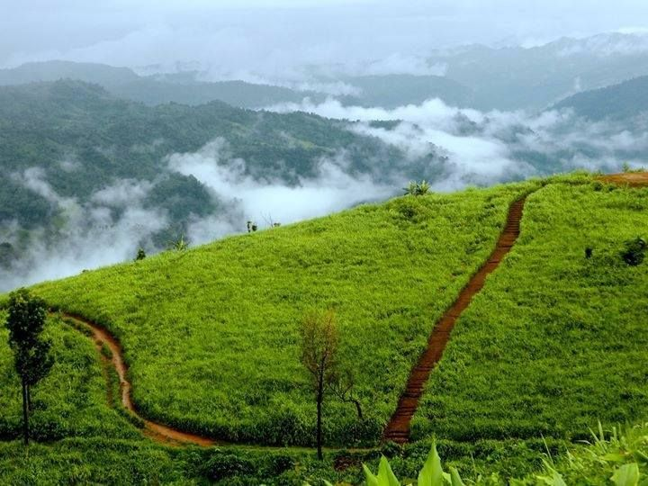
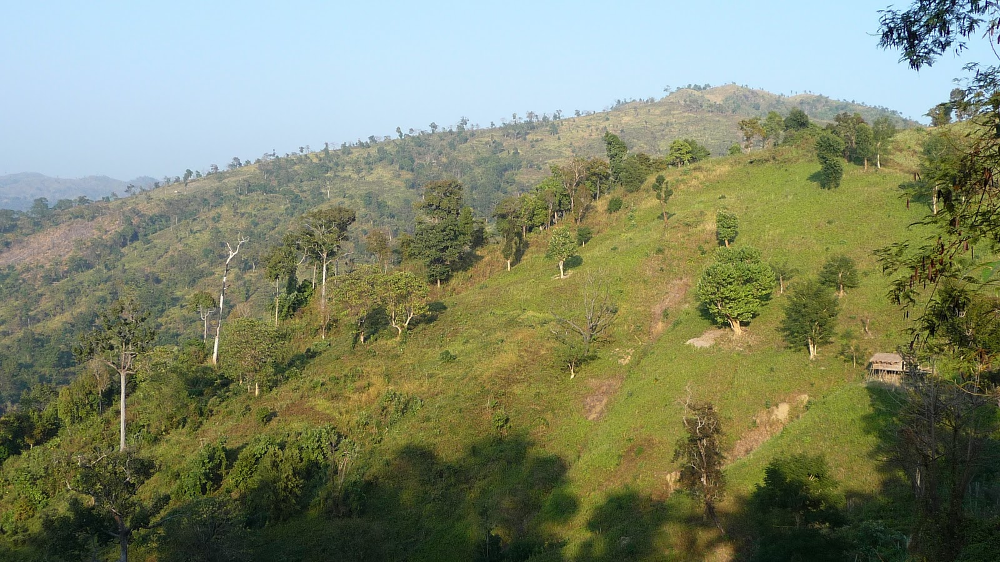
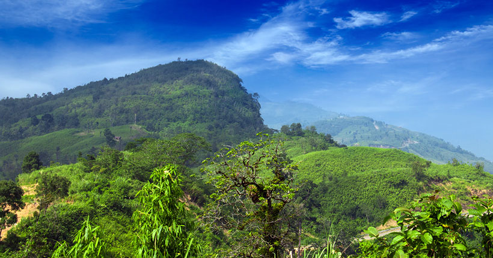

Home Page
Welcome to World of Mountains
Lets go for Adventure and reveal the Mystery
Keo Karadong
Mysterious Cloud

Keokradong is a peak located in Bandarban, Bangladesh, with an elevation of 986 metres (3,235 ft). Some sources claim it as the highest point of Bangladesh.
On the top of Keokradong there is a small shelter and a signboard put up by Bangladesh Army proclaiming the elevation to be 967 metres (3,173 ft).
Height measured by handheld GPS shows it is 986 metres (3,235 ft) with 3m accuracy.
There is a controversy about the highest point of Bangladesh, and some sources indicate Saka Haphong as the most elevated peak of the country. However, Tazing Dong is officially recognized as the highest point of Bangladesh.
Keokradong is a popular tourist attraction in Bangladesh for mountaineers.Keokradong is one of the cloudiest places in Bangladesh.
Sajek
Living beside the Cloud

Sajek Tripuri Valley is one of the most popular tourist spots in Bangladesh situated among the hills of the Kasalong range of mountains in Sajek union, Baghaichhari Upazila in Rangamati District.[3] The valley is 2,000 feet (610 m) above sea level.[4] Sajek Tripuri Valley is known as the Queen of Hills & Roof of Rangamati.
Sajek is a union located in the north of Chittagong Hill Tracts. It's under Baghaichori Upazila in Rangamati hill district, it is situated 67 kilometres (42 mi) north-east from Khagrachhari town and 95 kilometres (59 mi) north from Rangamati city. The border of Bangladesh and Mizoram of India is 8 kilometres (5.0 mi) east from Sajek
Sajek valley is known for its natural environment and is surrounded by mountains, dense forest, and grassland hill tracks. Many small rivers flow through the mountains among which the Kachalong and the Machalong are notable. On the way to Sajek valley, one has to cross the Mayni range and the Mayni river. The road to Sajek has high peaks and falls.
Tajin-Dong
Peak Point of Bangladesh

Tazing Dong (also known as Bijay) is a mountain in Bangladesh. Officially, it is the highest mountain in Bangladesh. It is located on Saichol Mountain ranges, Ruma Upazila of Bandarban District, southeast of Bangladesh. According to official calculations, the height of Tazing Dong is 1,280 metres (4,200 ft). Earlier, some used to say that Keokradong was the highest mountain in Bangladesh; others used to claim Saka Haphong the highest mountain.
Tazing Dong is in the Saichol Mountain range, Remakri Union, Ruma Upazila, Bandarban District, in Bangladesh. It is 25 km (16 miles) away from Upazila Sadar of Ruma Upazila. There is a tribal village near this peak.
Ali Kadam
A peak of Wonder

Alikadam is a popular hiking destination among tourists for the tunnels in the mountains known as "Alir Guha" or "Ali's Tunnels". Tourists are expected to face slippery and muddy terrains for the hike to the tunnels. Winter is the safest season to travel because the mountain streams and rivers are dangerous during Monsoon.
Another popular point is Marayan Thong. Recently it became popular tourist spot.Marayong Dong (Marayon Thong) is a hill in the Mirinja Range of Alikadam Police Station in Bandarban District. This hill is also known as; Marayan Tong, Maraing Tong, Merai Thong Jadi, Maraing Dong etc. There is a Buddhist shrine on the top of this hill which is about 1650 feet high. The huge Buddha statues in the open nature make this place more solemn. The mountains on the horizon and the river Matamuhuri flowing like a snake below, the crop fields are all a state of imagination will give unconditional feelings. Most of the tribals including Tripura, Marma, Murang people live in this Marayong Thong hill.